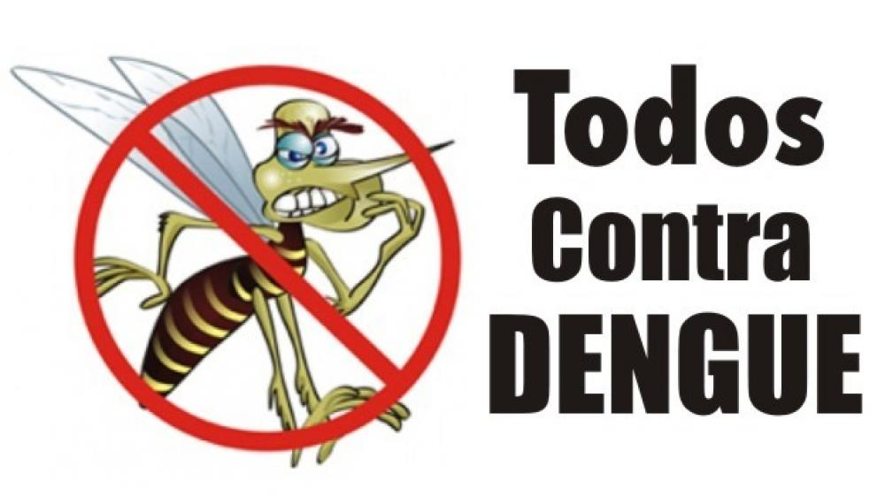

Como previrnir:
Prevenir a dengue envolve uma abordagem multifacetada que combina medidas individuais e comunitárias para reduzir o risco de infecção. Aqui estão algumas maneiras eficazes de prevenir a propagação da dengue:
Eliminação de criadouros de mosquitos: O Aedes aegypti, mosquito transmissor da dengue, deposita seus ovos em recipientes de água parada. Portanto, é essencial eliminar esses criadouros em sua casa e comunidade. Isso inclui esvaziar recipientes, como vasos de plantas,
Manutenção de recipientes de água: Se não for possível eliminar recipientes que acumulam água, como vasos de plantas ou bebedouros de animais, certifique-se de mantê-los limpos e mudar a água regularmente para evitar a proliferação de mosquitos.
Uso de repelentes: O uso regular de repelentes de insetos, especialmente durante o amanhecer e o anoitecer, quando os mosquitos são mais ativos, pode ajudar a evitar picadas de mosquitos infectados.
Uso de roupas protetoras: Vestir roupas que cubram a maior parte do corpo, como calças compridas e camisas de manga comprida, pode reduzir o risco de picadas de mosquitos.
Instalação de telas mosquiteiras: Em áreas onde a dengue é endêmica, é importante instalar telas mosquiteiras em janelas e portas para impedir a entrada de mosquitos em casa.
Instalação de telas mosquiteiras: Em áreas onde a dengue é endêmica, é importante instalar telas mosquiteiras em janelas e portas para impedir a entrada de mosquitos em casa.
Promover a conscientização comunitária: Educar a comunidade sobre os riscos da dengue e as medidas preventivas é fundamental para mobilizar esforços eficazes de prevenção.
as medidas ajuda a reduzir a chance de proliferação do mosquito e a transmissão da dengue.